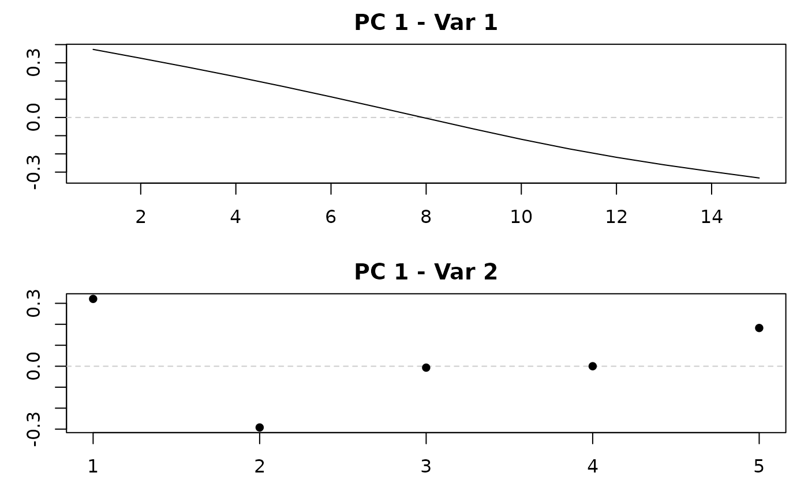

Regularized (Smooth and Sparse) Principal Component Analysis for Hybrid Data
Source:R/ReMPCA.R
ReMPCA.RdFits regularized principal components to a hybrid data object (functional, image, and non-functional blocks observed on a common set of rows) by a regularized power algorithm. Smoothness and sparsity can be imposed on the row direction (scores, \(u\)) and, block by block, on the column direction (loadings, \(v\)). Smoothing parameters are selected by (conditional) generalized cross-validation and sparsity parameters by \(K\)-fold cross-validation whenever more than one candidate value is supplied.
Usage
ReMPCA(
hd,
centerhds = TRUE,
num_pcs = 1,
nfolds_u = 5,
nfolds_v = NULL,
thresh = 1e-10,
maxit = 100,
tuning_iter = 1,
parallel = FALSE,
weights = NULL,
smoothness_type = "Second_order",
sparse_tuning_type = "soft",
tuning_order = "Sparsity",
cv.pick = "1se",
sparse_tuning_u = NULL,
sparse_tuning_v = NULL,
smooth_tuning_u = NULL,
smooth_tuning_v = NULL,
verbose = TRUE
)Arguments
- hd
An hdClass object.
- centerhds
A logical; if True, it demeans the data before calculating the principal components.
- num_pcs
An integer. The number of principal components.
- nfolds_u
An integer. It's used in cross validation approach for tuning the level of sparsity of rows.
- nfolds_v
An integer vector of length
p(the number of variables), where thei-th element specifies the number of cross-validation folds to use for thei-th variable. If not provided (NULL), a value of 5 will be assigned to all variables by default.- thresh
The convergence threshold in power algorithm.
- maxit
Maximum number of iterations in power algorithm.
- tuning_iter
Integer specifying the number of iterations to perform during the tuning process for conditional smoothing and sparsity parameters.
- parallel
Logical; if
TRUE, the cross-validation fits used to tune the sparsity parameters are distributed over a local PSOCK cluster created internally (at most 6 workers, and never more thanparallel::detectCores()). The cluster is stopped before the function returns. Default isFALSE.- weights
Optional numeric vector of scaling weights. If
NULL, the function automatically computes weights based on the inverse square root of the average variance of each variable. If set to0, no scaling is applied. If a numeric vector is provided, its length must match the number of variables, and each element is used to scale the corresponding variable. This is used to adjust for scale differences across variables in the hybrid data object.- smoothness_type
A character string specifying the method used in smoothing u and/or v, must be one of "Second_order" (default), "First_order" or "Indicator".
- sparse_tuning_type
A character string specifying the sparse calculation method. Must be one of "soft" (default), "hard", or "SCAD".
- tuning_order
A character string representing the tuning order. If set to 'Sparsity', sparsity parameters are tuned first, followed by smoothness. If set to 'Smoothness', the order is reversed.
- cv.pick
A character string specifying the rule used to select the optimal tuning parameter during cross-validation for sparsity. If set to
'min', the tuning parameter corresponding to the minimum cross-validation error is chosen. If set to'1se'(the default), the 1-standard-error rule is applied, selecting the most regularized model whose error is within one standard error of the minimum.- sparse_tuning_u
Optional. Specifies the sparsity level(s) for rows:
A single non-negative integer for fixed sparsity.
A numeric vector of candidate values, to be selected via cross-validation (CV).
Set to
0for no sparsity.If
NULL, the function defaults to theSparsity_parameterattribute from thehdClassobject.
- sparse_tuning_v
Optional. A list of length
p(number of variables), where thei-th element is either a numeric value or a vector specifying candidate sparsity levels for thei-th variable. If set toNULL, the function will default to using theSparsity_parameter_colattribute from the input object of classhdClass.- smooth_tuning_u
Optional. Specifies smoothing parameter for rows:
A single number for fixed smoothness.
A numeric vector of candidate values, to be selected via generalized cross-validation (GCV).
Set to
0for no smoothnessIf
NULL, the function defaults to theSmoothing_parameterattribute from thehdClassobject.
- smooth_tuning_v
Optional. A list of length
p(number of variables), where thei-th element is either a numeric value or a vector specifying candidate smoothing parameters for thei-th variable. If set toNULL, the function will default to using theSmoothing_parameter_colattribute from the input object of classhdClass.- verbose
Logical; if
TRUE(default), progress bars and progress messages are printed. Set toFALSEfor silent fitting.
Value
A list with components
- ReconstructedData
List (one element per component) of the fitted rank-one matrices \(\hat u_j \hat v_j^\top\), on the centered and weighted scale.
- PCFunctions
List (one element per component) of lists (one element per variable) holding the estimated loadings \(\hat v_j\).
- PCScores
Matrix of scores \(\hat u_j\), one column per component.
- OptimalAlphaV, OptimalAlphaU
Selected smoothing parameters, per component.
- OptimalGammaV, OptimalGammaU
Selected sparsity parameters, per component.
- GCVResultsV, GCVResultsU
GCV scores over the candidate smoothing parameters.
- CVResultsV, CVResultsU
CV errors and standard errors over the candidate sparsity parameters.
- variable_types
Type of each variable:
"hd"(functional) or"rd"(regular).- VarianceExplained
Proportion of the total variation of the (centered and weighted) data explained by each estimated component, computed by projecting the data onto the span of the estimated loadings.
Details
Components are extracted sequentially. After the \(j\)-th regularized component \(\hat u_j \hat v_j^\top\) is estimated (with \(\|\hat v_j\| = 1\)), it is subtracted from the (centered and weighted) data matrix and the next component is estimated from the residual matrix.
Candidate sparsity levels are interpreted as the number of entries set to zero
and should be supplied in increasing order (least sparse first), because the
one-standard-error rule (cv.pick = "1se") selects the largest candidate
whose CV error is within one standard error of the minimum. The cross-validation
folds are formed with a fixed internal seed so that results are reproducible;
the global random number generator state of the user is not modified.
References
Huang, J. Z., Shen, H. and Buja, A. (2008). Functional principal components analysis via penalized rank one approximation. Electronic Journal of Statistics, 2, 678–695. doi:10.1214/08-EJS218
Shen, H. and Huang, J. Z. (2008). Sparse principal component analysis via regularized low rank matrix approximation. Journal of Multivariate Analysis, 99(6), 1015–1034. doi:10.1016/j.jmva.2007.06.007
Huang, J. Z., Shen, H. and Buja, A. (2009). The analysis of two-way functional data using two-way regularized singular value decompositions. Journal of the American Statistical Association, 104(488), 1609–1620. doi:10.1198/jasa.2009.tm08024
Examples
set.seed(1)
n <- 40
u <- sin(seq(0, pi, length.out = n))
X1 <- outer(u, cos(seq(0, pi, length.out = 15))) + matrix(rnorm(n * 15, sd = 0.2), n)
X2 <- outer(u, c(1, -1, 0, 0, 0.5)) + matrix(rnorm(n * 5, sd = 0.2), n)
hd <- hdClass(list(fdClass(X1, Smoothing_parameter = c(0.01, 0.1, 1)),
rdClass(X2, Sparsity_parameter = 0:2)))
fit <- ReMPCA(hd, num_pcs = 1, nfolds_u = 2, nfolds_v = c(2, 2),
cv.pick = "min", verbose = FALSE)
fit$OptimalAlphaV
#> [[1]]
#> [1] 0.01 0.00
#>
fit$OptimalGammaV
#> [[1]]
#> [1] 0 1
#>
plot_pc_functions(fit)
